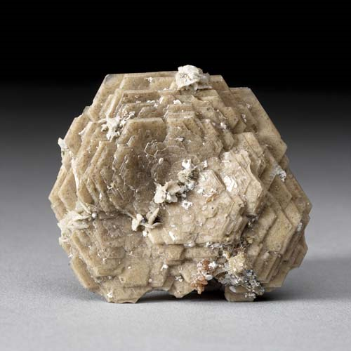
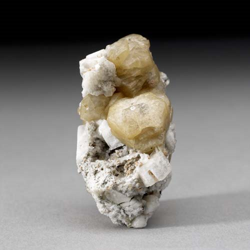
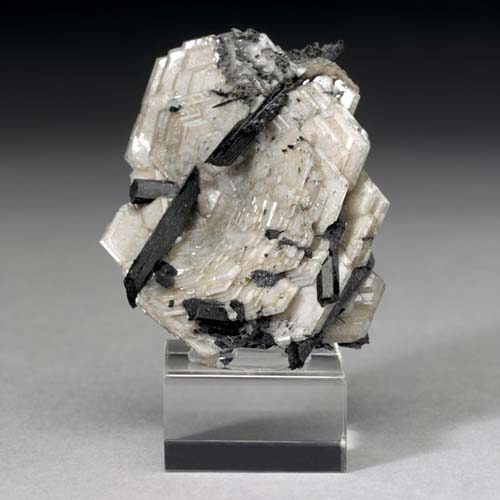

Catapleiite - Na2ZrSi3O9·2H2O
Cyclosilicates




Habit: Colorless, light gray, beige to tan, light yellow, orange or light blue. Crystals pseudo-hexagonal, thin tabular; rosettes of crystal plates. Weakly vitreous or dull luster; transparent to translucent to opaque. White streak.
Environment: Occurs in syenites and nepheline syenites and in pegmatites, typically the result of metasomatic alteration of eudialyte.
Etymology: From the Greek kata and pleios, meaning "with many," for its association with many other rare minerals.